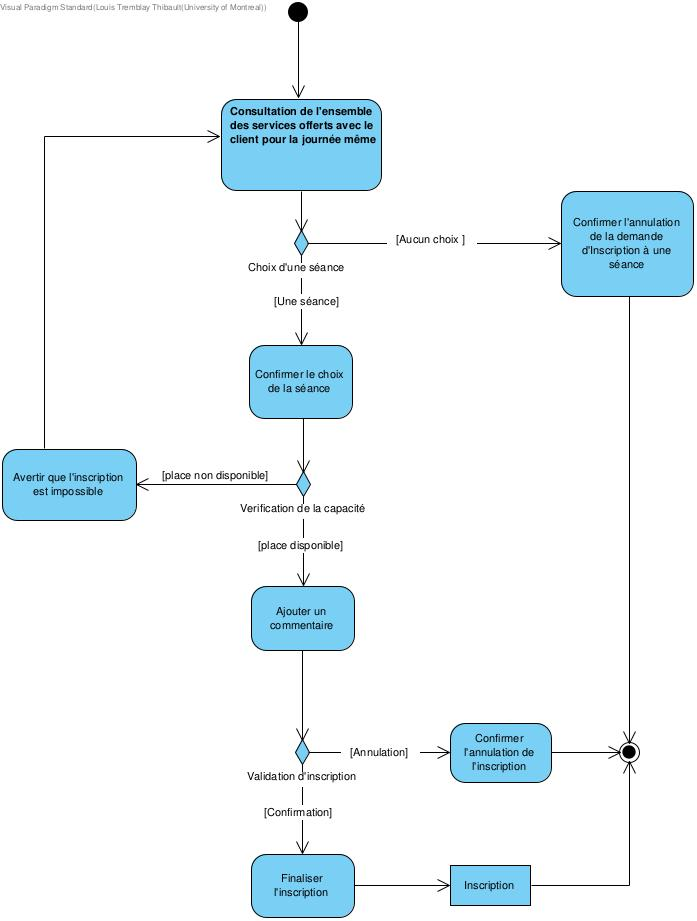
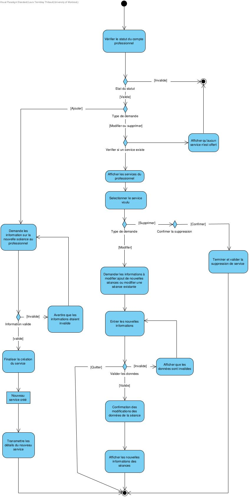

Participants
- Louis Tremblay Thibault, louis.tremblay.thibault@umontreal.ca, ####6791, ~20-21h de travail
- Adrian Sanchez Roy, adriansanchezroy@gmail.com, ####9885, ~20-21h de travail
- Hugo Carrier, hugo.carrier@umontreal.ca, ####7563, ~20-21h de travail
Tâches
Glossaire
- Centre sportif : regroupement d'installations utilisées pour pratiquer des sports variés
- Salle d'entraînement : salle comprenant divers équipements et machines d'entraînement
- Salle multisport : salle de gymnase avec plusieurs marquages au sol permettant de pratiquer plusieurs sports nécessitant un terrain
- Membre : adhérent au centre sportif ; détient un numéro d'identification unique
- Agent : employé du centre sportif ; utilisateur du système informatisé
- Séance : événement à date fixe de sport ou rendez-vous avec un professionnel
- Professionnel : professionnel de santé/bien-être qui anime les séances
- Service : catégorie de séances qu'offrira aux membres un professionnel dans le centre sportif
- Séance : occurrence d’un service qui a lieu à une certaine, un certain jour avec une capacité maximale.
- Centre de données : système central de gestion informatisée du centre sportif
- Informations personnelles : informations fournies par les clients lors de l’adhésion au #GYM
- Requête : demande effectuée au système afin d’obtenir certaines informations.
- Code de service : un numéro à sept chiffres qui correspond à un service fourni par #GYM.
- Confirmation de présence : action qu’effectue le membre pour indiquer que le service a été rendu en avance.
- Numéro de membre : un numéro à neuf chiffres unique qui identifie chaque membre.
- Numéro de professionnel : un nombre de neuf chiffres attribué à chaque professionnel.
- Client : membre ou professionnel.
- Répertoire des services : base de données de tous les services offerts et leur séances.
- TEF : transfert électronique de fond.
- Procédure comptable : procédure s'effectuant chaque vendredis à minuit qui créent des fichiers TEF et un rapport de synthèse.
- Rapport de synthèse : rapport envoyé au gérant concernant des comptes payables et informations reliées aux professionnels à être payés, créé hebdomadairement ou sur demande.
- Gérant : le gérant du #Gym.
- RnB : organisation tierce qui s'occupe des services comptables.
Diagramme de cas d'utilisation UML
Cas d'utilisation
Cas d'utilisation 1: un client ou un professionnel adhère au centre sportif. But : Inscrire le client pour qu’il devienne membre de #Gym ou pour inscrire le professionnel au #Gym. Préconditions : client/professionnel se présente à la réception du centre, un agent est disponible pour l’inscrire et le centre de données est actif. Acteurs : client (principal), agent (secondaire), professionnel(principal). Scénario principal : 1. Un client se présente à la réception du centre sportif. 1.1. Le client informe l’agent qu’il souhaite devenir membre de #Gym. 2. L’agent demande au client ses informations personnelles. 3. Le client fournit à l’agent ses informations personnelles. 4. L’agent entre les informations personnelles du client dans le Centre de données. 5. L’agent soumet une requête au centre de données d’enregistrer les informations personnelles du client. 6. Le centre de données traite la requête en vérifiant la complétude des informations données. 7. Les informations données sont enregistrées dans le centre de données. 8. Le centre de données crée le nouveau membre. 8.1 Le centre de données assigne automatiquement un numéro unique au nouveau membre. 9. L’agent informe le nouveau membre que son adhésion est complète. Scénarios alternatifs : 1a. Un professionnel se présente à la réception du centre. 1a.1. Retour à l’étape 1.1 du scénario principal en remplaçant les termes client et membre par professionnel. 7a.1. Le centre de données établit que les informations données sont incomplètes ou invalides. 7a.2. Le centre de données affiche le message « Incomplet » sur l’écran de l’agent. 7a.3. L’agent redemande les informations personnelles au client ou au professionnel, le cas échéant. 7a.4 Retour à l’étape 3 du scénario principal en remplaçant les termes client et membre par professionnel si l’agent traite l’adhésion d’un professionnel. Postconditions : le centre de données a enregistré les informations personnelles du nouveau membre ou du professionnel et est disponible pour inscrire le prochain client/professionnel.
Cas d'utilisation 2: un membre souhaite accéder au centre sportif. But : gérer l’accès des membres au #Gym. Préconditions : le membre se présente à la réception du centre et un agent est disponible pour lui donner accès. Acteurs : membre (principal), agent (secondaire). Scénario principal : 1. Le membre se présente à la réception du centre sportif. 2. L’agent lui demande son numéro de membre. 3. Le membre donne son numéro de membre à l’agent. 4. L’agent rentre le numéro donné dans le centre de données. 5. L'agent envoie une requête au centre de données de vérifier le numéro de membre. 6. Le centre de données traite la requête. 6.1 Le centre de données établit que le numéro du membre est valide. 6.2 Le centre de données affiche le mot « Validé » sur l’écran de l’agent une fois la vérification effectuée. 7. L'agent informe le membre que son accès est valide. 8. L’agent ouvre le tourniquet pour permettre au membre d'accéder au centre sportif. Scénarios alternatifs : 7a. Le centre de données établit que le numéro du membre est invalide. 7a.1. Le centre de données imprime la raison « Numéro invalide » sur l’écran de l’agent. 7a.2. L’agent redemande le numéro au membre; 7a.3. Retour à l’étape 3 du scénario principal. 7b. Le centre de données établit que le numéro du membre est invalide. 7b.1. Le centre de données imprime la raison « Numéro invalide » sur l’écran de l’agent. 7b.2. L’agent redemande le numéro au membre; 7b.3. Le membre affirme qu'il n'est pas en fait inscrit au #Gym et qu'il souhaite s'inscrire. 7b.3. Retour à l’étape 2 du scénario principal du cas d'utilisation 1. 6c. Le centre de données établit que le membre est suspendu. 6c.1. Le centre de données imprime la raison « Membre suspendu » sur l’écran de l’agent. 6c.2. L'agent avise le membre que des frais sont dus. 6c.3. L’agent refuse l’accès du membre suspendu au centre sportif. Postconditions : le centre de données est prêt à valider l’accès du prochain membre.
Cas d'utilisation 3: un membre s’inscrit à une séance. But : Inscrire le membre à une séance afin qu’il puisse participer à un cours de sport ou obtenir tout autre service d’un professionnel. Préconditions : le membre se présente à la réception du centre et un agent est disponible pour l’inscrire. Acteurs : membre (principal), agent (secondaire), client(secondaire). Scénario principal : 1. Le membre se présente à la réception du centre sportif. 1.1 Le membre avise l’agent qu’il souhaite s’inscrire à une séance. 2. L’agent lui demande son numéro de membre. 3. Le membre donne son numéro de membre à l’agent. 4. L’agent rentre le numéro donné dans le centre de données. 5. L'agent envoie une requête au centre de données de confirmer le numéro fourni. 6. Le centre de données confirme que le numéro fourni est valide. 6.1. Le centre de données imprime le mot « Numéro Valide » sur l'écran de l'agent une fois la validation effectuée. 7. L’agent aide le membre à consulter l’ensemble des services offerts et les séances disponibles pour le jour même dans le répertoire des services. 8. Le membre sélectionne une séance. 8.1 Le membre confirme son inscription à la séance. 9. Le centre de données crée un enregistrement avec les informations requises sur le disque : À chaque fois qu’une inscription de séance est effectuée, les informations suivantes doivent être enregistrées par le centre de données : Date et heures actuelles Date à laquelle le service sera fourni Numéro du professionnel Numéro du membre Code du service Commentaires (facultatifs) 10. Le centre de données affiche le montant à payer sur l'écran de l'agent. 11. L'agent avise le membre du montant dû. 12. Le membre paie le montant demandé. 13. L’agent avise le membre que son inscription est complète. Scénarios alternatifs : 2a. Aucun service ou séance n’est disponible pour le jour même. 2a.1. L’agent en informe le membre et lui avise de retourner le lendemain. 2a.2. Retour à l’étape 1 scénario principal. 3a. Le membre avise l'agent qu'il n'a pas de numéro de membre. 3a.1. L'agent demande au client s'il souhaite s'inscrire. 3a.2. Le client avise l'agent qu'il veut adhérer au #Gym. 3a.3. Retour à l'étape 2 du scénario principal du cas d'utilisation 1. 6a. Le centre données confirme que le numéro donné est invalide. 6a.1. Le centre de données imprime le message « Numéro Invalide » sur l'écran de l'agent une fois la validation effectuée. 6a.2. L'agent redemande au membre son numéro. 6a.3. Retour à l'étape 3 du scénario principal. 8a. Le membre informe l'agent qu'il souhaite annuler la demande d'inscription. 8a.1. L'agent annule la demande d'inscription. 8a.1.1. L'agent sélectionne « Annuler » dans le centre de données. 8a.1.2. Le centre de données annule la demande d'inscription. 8a.1.3. Le centre de données affiche le message « Demande Annulée » sur l'écran de l'agent. 8a.2. L'agent informe le membre que sa demande d'inscription a été cancelée. Postconditions : le centre de données a créé un enregistrement de l'inscription et est disponible pour inscrire le prochain membre à une séance.
Cas d'utilisation 4: un professionnel souhaite fournir un service chez #Gym. But : ajouter/modifier/supprimer un service d’un professionnel. Préconditions : le professionnel se présente à la réception du centre et un agent est disponible pour l’assister. Acteurs : professionnel (principal), agent (secondaire). Scénario principal : 1. Le professionnel se présente à la réception du centre. 2. Le professionnel avise l’agent qu’il souhaite fournir un service chez #Gym. 3. L’agent demande au professionnel son numéro de professionnel. 4. Le professionnel fournit à l’agent son numéro de professionnel. 5. L’agent envoie une requête au centre de données pour obtenir l’enregistrement du professionnel. 5.1 Le centre de données traite la requête et affiche à l’écran de l'agent les informations du professionnel. 6. L’agent confirme au professionnel qu’il est dans le centre de données et lui demande les horaires des différentes séances auxquelles aura lieu le service. 7. Le professionnel indique à l’agent les horaires des différentes séances auxquelles aura lieu le service. 8. L’agent demande les informations nécessaires au professionnel : Pour chaque ajout de service, les informations suivantes sont requises : Date et heures actuelles Date de début de service Date et heures des séances Récurrence hebdomadaire de la séance Capacité maximale Numéro du professionnel Code du service Commentaires(facultatif) 9. Le professionnel fournit les informations demandées à l’agent. 10. L'agent envoie une requête au centre de données d'enregistrer ces informations. 11. Le centre de données vérifie si toutes les informations nécessaires ont été fournies. 11.1 Une fois toutes les informations saisies, un numéro de service est généré par le centre de données. 12. Un enregistrement des informations nécessaires est créé par le centre de données : Pour chaque enregistrement, les informations décrites à l’étape 8 sont enregistrées par le centre de données. Scénarios alternatifs : 2a. Le professionnel avise l'agent qu'il souhaite modifier un service qu'il fournit. 2a.1. L'agent demande au professionnel son numéro de professionnel. 2a.2. Le professionnel fournit son numéro à l'agent. 2a.3. L’agent envoie une requête au centre de données pour obtenir l’enregistrement du professionnel. 2a.4. L’agent demande professionnel son le code de service afférent. 2a.5. Le professionnel fournit le code de service. 2a.6. L’agent envoie une requête au centre de données pour trouver le service.. 2a.6.1. Le centre de données traite la requête et affiche le service en question sur l'écran de l'agent. 2a.7. L'agent demande au professionnel ce qu'il souhaite modifier au service. 2a.8. Le professionnel informe l'agent des modifications. 2a.9. L'agent envoie une requête de modification au centre de données. 2a.10. Le centre de données traite la requête et affiche le message « Modification complétée » sur l'écran de l'agent. 2a.11. L'agent confirme au professionnel que son service a été modifié. 2b. Le professionnel avise l'agent qu'il souhaite supprimer un service qu'il fournit. 2b.1. L'agent demande au professionnel son numéro de professionnel. 2b.2. Le professionnel fournit son numéro à l'agent. 2b.3. L’agent envoie une requête au centre de données pour obtenir l’enregistrement du professionnel. 2b.4. L’agent demande professionnel son le code de service afférent. 2b.5. Le professionnel fournit le code de service. 2b.6. L’agent envoie une requête au centre de données pour trouver le service. 2b.6.1. Le centre de données traite la requête et affiche le service en question sur l'écran de l'agent. 2b.7 L'agent sélectionne « Supprimer Service ». 2b.8. Le centre de données affiche le message « Confirmer suppression de service ». 2b.9. L'agent demande au professionnel de confirmer la suppression du service. 2b.10. Le professionnel confirme la suppression. 2b.11. L'agent sélectionne « Confirmer ». 2b.12. Le centre de données traite la requête et supprime le service. 2b.12.1. Le centre de données affiche le message « Service supprimé » sur l'écran de l'agent. 2b.13 L'agent avise le professionnel que son service a été supprimé. 4a Le professionnel informe l'agent qu'il n'est pas inscrit au centre sportif. 4a.1. L’agent demande au professionnel ses informations personnelles. 4a.2. L’agent envoie une requête au centre de données d'enregistrer les informations fournies. 4a.3. Le centre de données vérifie la complétude des informations données. 4a.3.1 Une fois la vérification confirmée, le centre de données imprime le mot « Complet » sur l'écran de l'agent. 4a.4. Les informations données sont enregistrées dans le centre de données. 4a.4.1 Le centre de données assigne automatiquement un numéro unique au nouveau professionnel. 4a.4.2 Le centre de données crée un enregistrement du nouveau professionnel. 4a.5. Retour à l’étape 6 du scénario principal. 12a. Les informations fournies par le professionnel sont incomplètes ou invalides. 12a.1 Le centre de données affiche le message « Invalide » sur l'écran de l'agent. 12a.2 L'agent redemande les informations au professionnel. 12a.3 Retour à l'étape 9 du scénario principal. Postconditions : le centre de données a enregistré le service proposé par le professionnel et est disponible pour ajouter le service du prochain professionnel.
Cas d'utilisation 5: professionnel consulte les inscriptions à ses séances. But : permettre au professionnel de consulter les inscriptions à ses séances. Préconditions : le professionnel se présente à la réception du centre et un agent est disponible pour l’assister. Acteurs : professionnel (principal), agent (secondaire). Scénario principal : 1. Le professionnel se présente à la réception du centre. 1.1. Le professionnel avise l’agent qu’il souhaite consulter les inscriptions à sa séance. 2. L’agent demande au professionnel son numéro de professionnel. 3. Le professionnel fournit son numéro à l'agent. 4. L'agent demande au professionnel la date et l’heure de la séance. 5. Le professionnel fournit la date et l’heure de la séance à l’agent. 6. L'agent entre ces informations dans le centre de données. 7. L’agent envoie une requête au centre de données d'afficher les informations de la séance demandée. 8. Le centre de données valide que la séance existe. 9. Le centre de données envoie les inscriptions de la séance demandée. 9.1. Ces inscriptions sont affichées sur l’écran de l’agent. 10. L’agent avise le professionnel des inscriptions à sa séance. Scénarios alternatifs : 9a. La requête au centre de données est invalide. 9a.1. Le centre de données affiche le mot « Requête invalide » sur l'écran de l'agent. 9a.2. L'agent avise le professionnel que l'information fournie est erronnée. 9a.3. L’agent redemande au professionnel la date et l’heure de la séance. 9a.4. Retour à l’étape 5 du scénario principal. Postconditions : le centre de données est disponible pour permettre la consultation du prochain professionnel.
Cas d'utilisation 6: un membre confirme sa présence à une séance. But : confirmer qu’un membre sera bel et bien présent à une séance et de s’assurer que seulement les membres inscrits puissent y assister. Préconditions : le membre se présente à la réception du centre et un agent est disponible pour l’assister. Acteurs : membre (principal), agent (secondaire). Scénario principal : 1. Le membre se présente à la réception du centre. 1.1. Le membre avise l’agent qu’il souhaite confirmer sa présence à une séance. 2. L'agent utilise le répertoire des services pour rechercher le code de service approprié. 3. L'agent rentre le code de service dans le centre de données. 4. Une requête est envoyée au centre de données. 4.1. Le centre de données valide le code de service donné. 4.2. Le centre de données affiche les séances correspondant au service. 5. L'agent sélectionne la séance approprié. 5.1. Une requête est envoyée au centre de données d'afficher toute l'information nécessaire. 5.2. Le centre de données affiche l'information sur l'écran de l'agent. 6. L'agent sélectionne « Confirmer inscriptions » 7. L’agent demande au membre son numéro de membre unique afin de valider son inscription à la séance sélectionnée. 8. Le membre fournit son numéro à l'agent. 9. L’agent entre le code du membre. 10. Une requête est envoyée au centre de données. 10.1. Le centre de données vérifie si l’inscription est valide. 10.2. Une fois l’inscription vérifiée, le centre de données imprime le mot « Validé » sur l’écran de l’agent. 10.3. Le centre de données enregistre la confirmation du service fourni sur le disque: Pour chaque confirmation de service fourni, les informations suivantes sont enregistrés sur le disque: Date et heure actuelles Numéro du professionnel Numéro du membre Code du service Commentaires (facultatif) 11. L’agent avise le membre que son accès à la séance a été confirmée. 12. Le membre peut participer à sa séance. Scénarios alternatifs : 4a. Le code de service donné est erroné. 4a.1. Le centre de donnée affiche le message « Code de service invalide » sur l'écran de l'agent. 4a.2. L'agent informe le membre que son code de service est invalide. 4a.3. L’agent redemande le code de service au membre . 4a.2. Retour à l’étape 3 du scénario principal. 8a. Le membre affirme qu'il ne possède pas de numéro de membre. 8a.1. L'agent avertit qu'une inscription au #Gym est nécessaire et demande au client s'il souhaite s'inscrire. 8a.2. Le client informe l'agent qu'il souhaite adhérer au #Gym. 8a.3. Retour à l'étape 2 du scénario principal du cas d'utilisation 1. 10a. Le numéro de membre est invalide. 10a.1. Le centre de donnée affiche le message « Invalide » sur l'écran de l'agent. 10a.2. L'agent informe le membre que son numéro est invalide. 10a.3. L’agent redemande au membre son numéro. 10a.4. Retour à l'étape 7 du scénario principal. 10b. Le numéro de membre est invalide. 10b.1. Le centre de donnée affiche le message « Invalide » sur l'écran de l'agent. 10b.2. L'agent informe le membre que son numéro est invalide. 10b.3. L’agent redemande au membre son numéro. 10b.4. Le membre redonne le même numéro à l'agent. 10b.5. L'agent informe le membre qu'il ne pourra pas assister à la séance et de bien vouloir s'inscrire à l'avance pour la prochaine fois. Postconditions : le centre de données est disponible pour permettre la confirmation de présence du prochain membre.
Cas d'utilisation 7: un membre demande une modification de son profil de membre. But : modifier ou supprimer un membre. Préconditions : le membre se présente à la réception du centre et un agent est disponible pour l’assister. Acteurs : membre (principal), agent (secondaire). Scénario principal : 1. Le membre se présente à la réception du centre. 1.1. Le membre avise l’agent qu’il souhaite modifier son profil de membre. 2. L'agent demande au membre son numéro unique. 3. Le membre fournit son numéro à l’agent. 4. L'agent rentre le numéro du membre dans le centre de données. 5. L'agent envoie une requête au centre de données d'afficher le profil du membre. 5.1. Le centre de données valide le numéro de membre fourni. 5.2. Le centre de données affiche le profil du membre sur l'écran de l'agent. 6. L’agent demande au membre le type de modification voulue. 7. Le membre avise l'agent qu'il souhaite modifier son profil de membre. 8. L'agent demande au membre les informations qu'il souhaite mettre à jour. 9. Le membre fournit les informations demandées à l'agent. 10. L'agent envoie une requête au centre de données d’enregistrer les informations modifiées. 11. Le centre de données vérifie la complétude des informations modifiées. 12. Les informations modifiées sont enregistrées dans le centre de données. 12.1 Le centre de données affiche le message « Modification complétée » sur l'écran de l'agent. 13. L'agent avise le membre que les modifications ont été effectuées. Scénarios alternatifs : 5a. Le centre de données affiche le le message « Numéro invalide » sur l'écran de l'agent. 5a.1. L'agent informe le membre que son numéro est invalide. 5a.2. L’agent redemande au membre son numéro. 5a.3. Retour à l'étape 3 du scénario principal. 7a. Le membre avise l'agent qu'il souhaite supprimer son adhésion. 7a.1. L'agent envoie une requête au centre de données de supprimer l'adhésion du membre. 7a.2. Le centre de données affiche le message « Confirmer la suppression » sur l'écran de l'agent. 7a.3. L'agent demande au membre de confirmer sa demande de suppression. 7a.4. Le membre confirme sa demande. 7a.5. L'agent selectionne « Confirmer ». 7a.6. Le centre de données supprime le profil du membre. 7a.7. Le centre de données affiche le message « Membre supprimé » sur l'écran de l'agent. 7a.8. L'agent confirme au ex-membre que son adhésion a été supprimée. Postconditions : le centre de données est disponible pour traiter la demande de modification du prochain membre.
Cas d'utilisation 8: procédure comptable. But : générer des enregistrements sur le disque sous la forme de données de TEF. Préconditions : le centre de données est actif. Acteurs : gérant (principal). Scénario principal : 1. Il est minuit un vendredi soir. 2. Une requête est envoyé au centre de données d'initier la procédure comptable. 3. La procédure comptable génère des enregistrements sur le disque sous forme de TEF avec les informations suivantes. Pour chaque procédure comptable, les informations suivantes sont enregistrés sur le disque pour chaque professionnel: Nom du professionnel Numéro du professionnel Montant à transférer au professionnel pour ses services de la semaine. 4. La procédure comptable lit le fichier des services fournis de la semaine. 5. La procédure comptable produit un rapport de synthèse. Pour chaque rapport de synthèse, les informations suivantes doivent y figurer: Comptes payables Liste des professionels qui doivent être payés cette semaine Nombre de services octroyé par chaque professionnel Nombre total des professionnels ayant fourni des services pour la semaine Nombre total hebdomadaire des services octroyés Total hebdomadaire des frais de professionnel 6. La procédure comptable envoie le rapport au gérant. Scénarios alternatifs : 1a. Le gérant fait une demande individuelle de rapport de synthèse. 1a.1 Retour à l'étape 4 du scénario principal. Postconditions : le centre de données est disponible pour traiter la prochaine procédure comptable et/ou demande de rapport de synthèse.
Diagramme d'activité UML
Diagramme d'activité principale
Diagramme d'activité modifier ou supprimer un membre
Diagramme d'activité confirmation de présence à une séance

Diagramme d'activité inscription à une séance

Diagramme d'activité modifier, ajouter ou supprimer un service

Diagramme d'activité inscription membre ou professionnel
Diagramme de classes
Diagramme de classes
Diagrammes de séquence
Diagramme de séquence ajout d'un membre
Diagramme de séquence modification et suppression d'un membre
Diagramme de séquence ajout et modification d'un service
Diagramme de séquence d'inscription et de confirmation d'inscription
Diagramme de séquence de procédure comptable
Tests
Test sur les usagers
Tests sur les services
Documentation
JavaDoc
Manuel d'utilisateur
Distribution des tâches et collaboration
Il est important de mentionner que nous avons eux plusieurs appels et que le pourcentage explique le travail écrit, mais chacun a participé à la création d'idées.| Section | Hugo | Louis | Adrian |
|---|---|---|---|
| Mise à jour des artéfacts | 33% | 33% | 33% |
| Code du programme | 33% | 33% | 33% |
| Tests unitaires JUnit | 33% | 33% | 33% |
| Manuel utilisateur | 33% | 33% | 33% |
| JavaDocs | 33% | 33% | 33% |